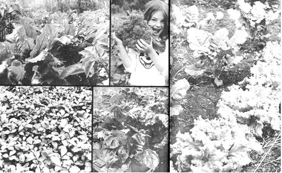

ABOVE LEFT: One way to grow more food oil less ground, utilizing a ""natural buddy system is by planting Early Wonder beets between the wide-spaced rows of potatoes. The potato leaves (at right and left) protect the beets from sun and wind while the beet foliage retains moisture between the potato rows. ABOVE MIDDLE: Lorrie Coggins holds a mammoth head of Hybrid Neptune broccoli (Ferry-Morse Seeds) which yields well in both poundage and quality. The heads should be soaked in salt water before freezing to kill and float to the surface any insects hidden in the tight florets. BELOW LEFT: These Senator Dunlap strawberries will begin to yield in May and flourish through July. If you plant this hardy rascal, plan to be home during the month of June when daily pickings area must! BELOW MIDDLE: Swiss chard is a good example of the repeaters or ""cut and come again"" group . . . of which lettuce, parsley and New Zealand Spinach are also members. Though it looks and tastes something like spinach-which requires cool weather and can be harvested only once-Swiss chard produces crop after crop all summer long from a single spring planting. Just cut the outer leaves and in a week or two new ones will be ready to harvest. ABOVE: A good way to avoid wasting space in your garden is to plant leaf lettuce as a border crop or between slower growing cabbage, cauliflower, broccoli and tomatoes. The leaf lettuce will be mature and out of the way before it can cause crowding.